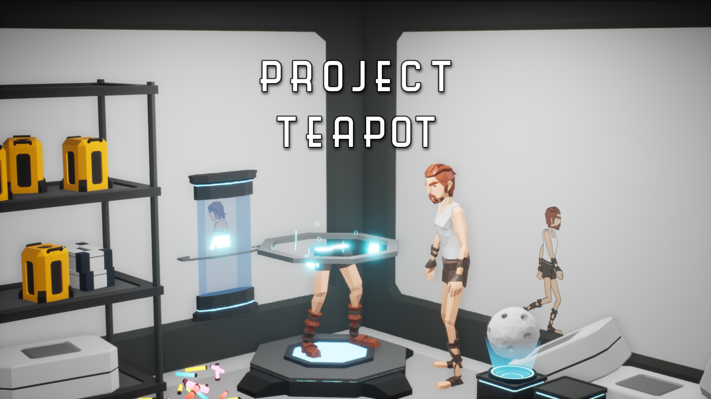
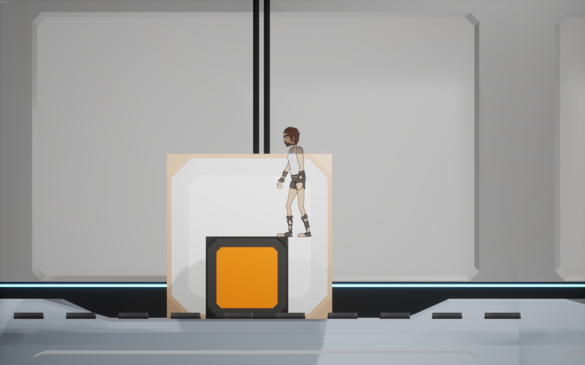
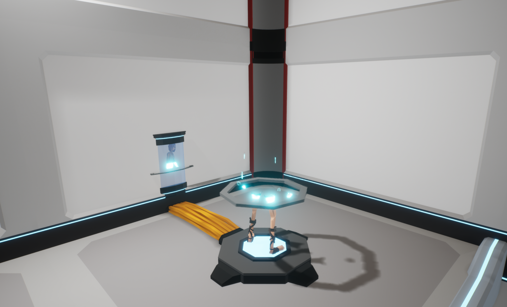
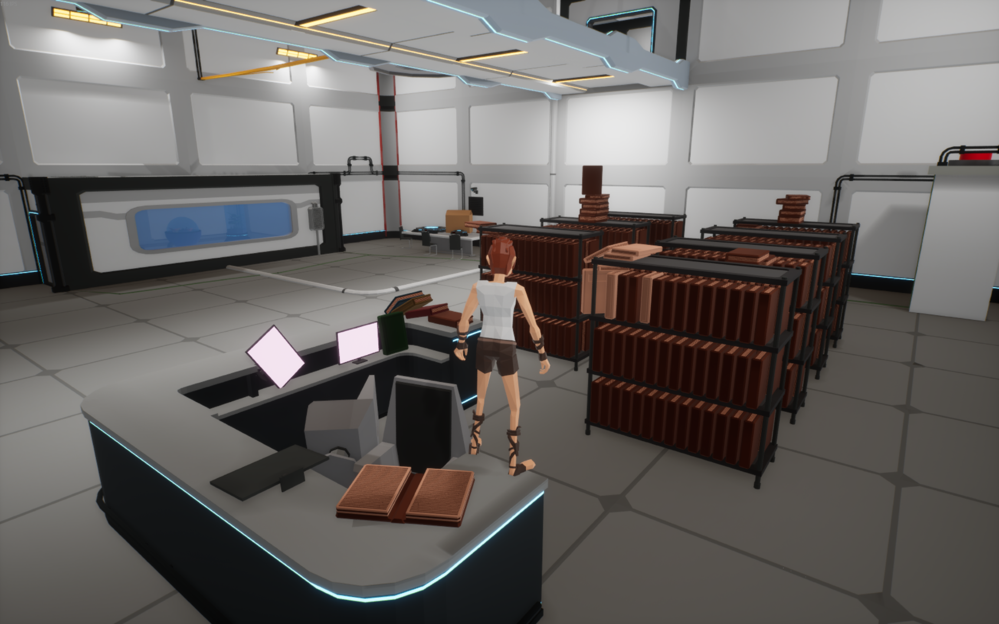
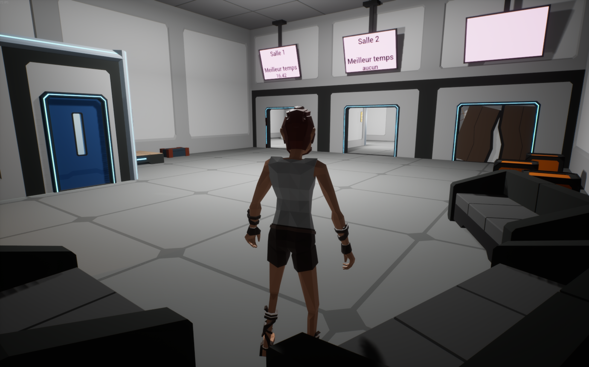

Le Défi Technique Principal : La Projection 2D/3D
La mécanique fondatrice de Project Teapot, "Le Crayonneur", a constitué le plus grand défi technique du développement. Elle consiste en une projection en temps réel de l'environnement 3D sur le plan d'évolution du joueur 2D.
Concrètement, le joueur en 3D manipule les éléments du décor (translation, rotation). Chaque mouvement modifie instantanément la topologie du niveau pour le joueur 2D. Il a donc fallu concevoir un système robuste capable de :
- Calculer dynamiquement les collisions d'objets 3D complexes sur un axe bidimensionnel.
- Gérer les différents états de matière : les caisses "solides" créent des plateformes projetées, tandis que les caisses "transparentes" effacent les obstacles sur le plan 2D.
- Assurer une synchronisation parfaite de ces calculs physiques et visuels entre les deux clients via le réseau.
Concept et Direction Artistique
Plongés dans un complexe scientifique futuriste et guidés par un robot, deux joueurs testent leur adaptabilité. L'ambiance visuelle accentue la dualité du gameplay :
- Monde 3D : Assets low-poly avec flat-shading pour une lisibilité optimale de l'espace.
- Monde 2D : Style "dessiné sur Paint", apportant une touche volontairement artisanale et atypique qui contraste avec la rigueur du complexe.
Une expérience pensée pour les amateurs de jeux comme Portal, It Takes Two ou Split Fiction.
Trailer du jeu
Galerie




Multijoueur et Architecture
- Réseau : Architecture client-serveur avec intégration de l'API Steam. Le créateur de la partie héberge le serveur.
- Matchmaking : Système d'invitation directe via la liste d'amis Steam intra-jeu.
- Communication : Système de Push To Talk intégré.
- Contrôles : Support complet Clavier/Souris et Manette (nécessite la désactivation de Steam Input).